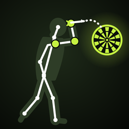

Utoljára frissítve: 2026. október
Röviden: az app nem küld adatot sehova. Nincs szerver, nincs fiók, nincs beépített követés vagy reklám. A felvételeid, a mérési eredményeid és a profilod a telefonodon vannak, és csak te férsz hozzájuk.
A dobásaidról készült videófelvételt; a videóból kiolvasott testpontokat (váll, könyök, csukló, csípő, térd, boka helyzete képkockánként); az ezekből számolt mérőszámokat; a pontszámokat, ha beírod őket; valamint azt, amit a profilodba te írsz be – nevet, életkort, testmagasságot, dobókezet, és ha kitöltöd, a bemutatkozást, a kedvenc játékost és a felszerelésedet. Ezen kívül eltároljuk, mely napokon használtad az appot (a naptárhoz és a sorozathoz), és a beállításaidat (pl. a kiválasztott célodat).
Kizárólag a saját készülékeden, az app elkülönített tárhelyén, amihez más alkalmazás nem fér hozzá. Az elemzés (mozgásfelismerés) is a telefonon, internet nélkül fut. Ha a telefonodról iCloud- vagy számítógépes biztonsági mentés készül, az az Apple és a te beállításaid szerint történik – erre nekünk nincs se ráhatásunk, se hozzáférésünk.
Te. Az app fejlesztője nem kap és nem lát semmit: nincs szerver, amire az adat felkerülhetne. Harmadik félnek sem adunk át semmit.
A kamerát csak akkor használjuk, amikor te elindítasz egy felvételt, kizárólag a dobásod rögzítésére, hang nélkül. A Fotók elérését csak akkor kéri az app, ha te mentesz ki egy videót a telefonodra. Mindkét engedélyt az iOS kéri el, és bármikor visszavonhatod a telefon Beállításaiban.
Ha te úgy döntesz, hogy megosztasz egy videót (pl. üzenetben vagy közösségi oldalon), azt az iPhone saját megosztás-ablakán keresztül teszed, és onnantól az a szolgáltatás kezeli, amelyiket választottad. Magától az app semmit nem oszt meg.
A PRO előfizetést és az örökös PRO-t az Apple kezeli az App Store-on keresztül. Fizetési adatot az app nem lát és nem tárol; csak annyit tud meg az Apple-től a telefonon, hogy aktív-e a PRO.
Ha bekapcsolod a heti emlékeztetőt, azt a telefonod ütemezi és jeleníti meg. Nem megy át rajta adat sehova. Bármikor kikapcsolható a Profil oldalon.
Ameddig te akarod. Egy kört a Körök fülön bármikor törölhetsz, a profilodat a Profil oldalon (ott azt is megkérdezzük, töröljük-e vele az eredményeidet). Ha letörlöd az appot, minden adat – a videókkal együtt – megszűnik. Kivétel: az ingyenes mentési keret állapotát (hány napja és hány kört mentettél) a telefon kulcskarikája (Keychain) őrzi meg, hogy az újratelepítés ne állítsa vissza; ez csak a telefonon van, és nem tartalmaz személyes adatot.
A GDPR hozzáférési, helyesbítési, törlési és adathordozhatósági jogot ad. Mivel nálunk nincs rólad semmilyen adat, ezeket a jogokat közvetlenül, az appon belül gyakorolhatod: mindent te látsz, te írsz át és te törölsz. Az egyes körök adatait (ZIP) és videóit ki is mentheted.
Az app nem gyerekeknek készült, és senkiről nem gyűjt adatot – gyerekekről sem.
Ha egyszer bekerül olyan funkció, ami adatot küld el a telefonról – például felhős mentés vagy ranglista –, az nem kapcsol be magától: előbb tájékoztatunk, és külön engedélyt kérünk rá. Ezt az oldalt is frissítjük.
Az app fejlesztője és az adatkezelésért felelős: Laki Richárd, magánszemély (Magyarország).
E-mail: dartsanalyzer.app@gmail.com
Last updated: October 2026
In short: the app sends no data anywhere. No server, no account, no built-in tracking or ads. Your recordings, your measurements and your profile are on your phone, and only you can reach them.
The video recording of your throws; the body points read out of the video (the position of your shoulder, elbow, wrist, hip, knee and ankle in each frame); the metrics calculated from those; your scores, if you enter them; and whatever you type into your profile – name, age, height, throwing hand, and, if you fill them in, your introduction, favourite player and your kit. Beyond that we store which days you used the app (for the calendar and streak) and your settings (e.g. your chosen goal).
Only on your own device, in the app's separate storage, which no other app can reach. The analysis (motion detection) also runs on the phone, offline. If your phone is backed up to iCloud or to a computer, that happens according to Apple and your own settings – we have no influence over it and no access to it.
You. The developer gets nothing and sees nothing: there is no server the data could go to. We pass nothing on to third parties.
We use the camera only when you start a recording, only to capture your throw, without sound. The app asks for Photos access only when you save a video to your phone. iOS asks you for both permissions, and you can withdraw them at any time in the phone's Settings.
If you choose to share a video (e.g. in a message or on social media), you do it through the iPhone's own share sheet, and from then on the service you picked handles it. The app shares nothing by itself.
The PRO subscription and Lifetime PRO are handled by Apple through the App Store. The app never sees or stores payment details; on the phone it only learns from Apple whether PRO is active.
If you turn on the weekly reminder, your phone schedules and shows it. No data travels anywhere through it. You can turn it off at any time on the Profile page.
As long as you want. You can delete a round at any time on the Rounds tab and your profile on the Profile page (where we also ask whether to delete your results with it). If you remove the app, all the data – videos included – goes with it. One exception: the state of the free saving allowance (how many days and rounds you have used) is kept in the phone's Keychain so that reinstalling doesn't reset it; it stays on the phone and contains no personal data.
GDPR gives you the right of access, rectification, erasure and data portability. Since we hold no data about you at all, you exercise these rights directly inside the app: you see everything, you edit it and you delete it. You can also export each round's data (ZIP) and videos.
The app isn't made for children, and it collects data about nobody – children included.
If a feature that sends data off the phone is ever added – cloud backup or a leaderboard, say – it won't switch itself on: we will tell you first and ask for separate permission. This page will be updated too.
Developer and data controller: Richárd Laki, private individual (Hungary).
Email: dartsanalyzer.app@gmail.com